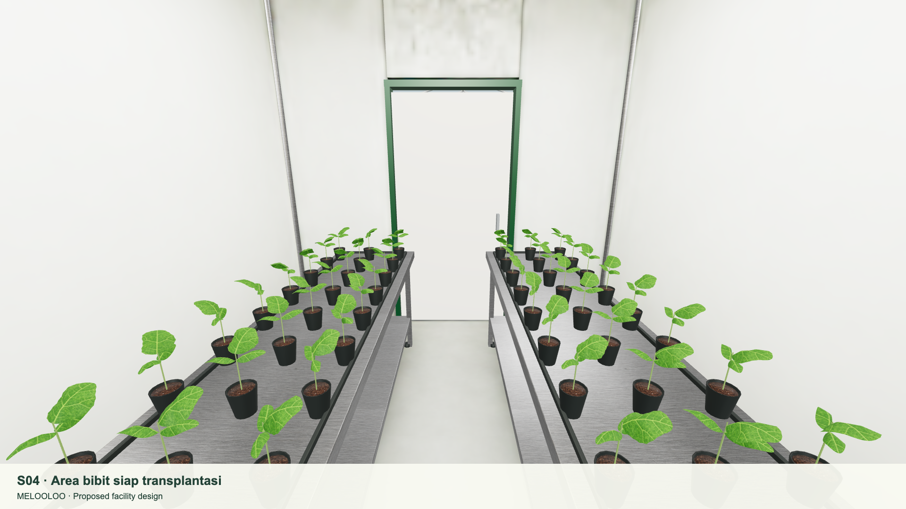
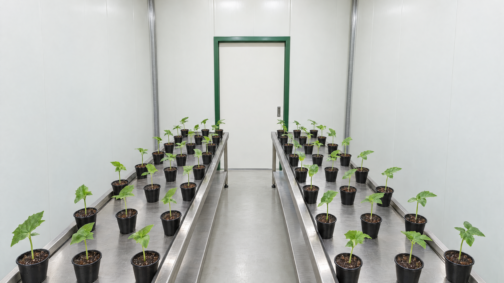

melooloo / proposed facility / S04
From simulator view
to photographic detail.
A reference-guided architectural study of the transplant-ready seedling room, generated through Higgsfield at maximum quality.
Proposed design · AI presentation study


Photographic studyActual simulatorWhat improved
Material, plant
and light response.
Inspect the steel grain, pot rims, substrate, leaf form and soft contact shadows. The source view constrains the two-bench layout, central aisle and rear doorway.
How to use this view
A visual target for
the moving model.
The photographic study illustrates the intended finish. The simulator remains the measured proposed layout; its geometry and baked lighting have not been changed by this image generation.
Seedance 1.5 Pro / 4 seconds / 1080p
A slow move into S04.
A generated presentation clip starting from the 4K study. Equipment placement should be read from the interactive facility plan.